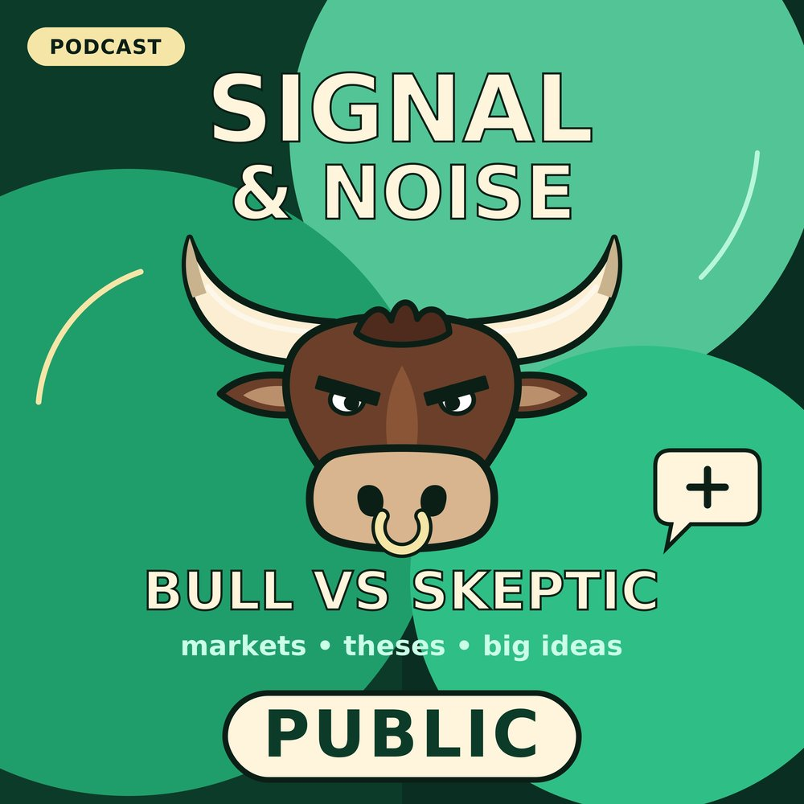

Anthropic Files Its S-1 — $16B Revenue, an $81B Paper Loss & a One-Share Founder Vote
Special edition: Anthropic publicly filed its S-1 on Oct 26, 2026 (Nasdaq: ANT; Goldman Sachs and Morgan Stanley lead). Max (bull) and Lena (skeptic) go through the filing: $16.3B H1 revenue (+1,304%), the $80.7B GAAP loss (mostly convertible-note revaluation), Q2 operating profit, $265.6B in purchase commitments and $321.4B in leases, the SpaceX, Microsoft, Amazon and Google deals, the LTBT, Founder LLC (50.1% vote) governance, market reaction, OpenAI, and read-across to the AI Infrastructure, AI Verticals and Musk theses. There is no price range or share count yet. Valuation ($1.5–2T) and timing (~Nov 19–20) come from press reports, not the filing. Graham and Wanjiru are fictional call-in characters.
Sources: SEC EDGAR S-1, Anthropic, CNBC live, Reuters/Investing.com, CoinDesk, Yahoo Finance, Stock Titan.